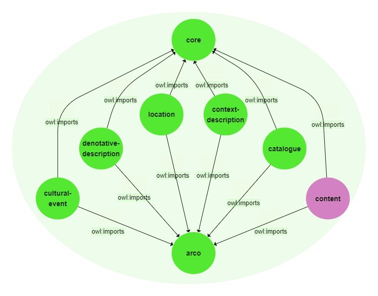

The idea: describing Breaking Bad using ArCo's ontology
The Cool Project borns with the main aim of definining and delivering knowledge about a cultural property through a knowledge graph based on ArCo. Specifically, we were interested in understanding whether it would have been possible to use ArCo’s ontology network to describe a TV series, a property that, due to its own multidimensional nature, highlights the need for deeper and more specific extraction of information.
The specific point of reference is Breaking Bad, a show by Vince Gilligan that has become worldy famous for being one of the most innovative series in terms of content and parallel plots. Thanks to these same features, it has been the perfect starting point to model a knowledge graph able to describe the content of any cultural property depicting a plot and some characters.
What's about Breaking Bad?
Breaking Bad is a complex cultural product, rich in facets both at the cataloging and the content level. However, since there are already many ontologies that deal with the description of films and TV series in terms of creator, performers and number of episodes (the most famous of which is undoubtedly that of IMDb), we have decided to approach it from a more unexplored and yet more interesting point of view: that of its content.
Breaking Bad went down in history for its multifaceted and unforgettable characters: and they were also the starting point for our modeling of its content.
A disclaimer: why using ArCo for content description
ArCo is a project involving the Italian Ministry of Cultural Heritage and the Institute of Cognitive Sciences and Technologies of CNR that has developed a network of ontologies able to model the wide domain of Italian cultural heritage combining the authoritativeness of ICCD standard and the interoperability of LOD.
At the moment, its network is articulated in seven ontology modules, each of which enables the description of a different and specific aspect of a cultural property:
- The arco module imports all the other modules and represents the ontology network itself
- The core module represents general concepts that can be used in the different modules of the whole network
- The catalogue module models concepts related to the ICCD Catalogue, and in particular catalogue records, that is the XML files recording all data gathered by a cataloguer on a particular Italian cultural property
- The location module all the information referred to a cultural property that cover spatial and geometry aspects
- The denotative description module encodes the characteristics of a cultural property observed during the cataloguing process, e.g. measurements, materials, techniques, etc
- The context description module represents the context of cultural properties, in a broad sense, including the information related to: authors, collectors, copyright holders, inventories, bibliography, etc.
- The cultural events module is dedicated to cultural events and exhibitions involving a cultural property
ArCo’s ontology network is thus mainly dedicated to the formal description of the catalographic aspect of cultural properties, firstly aimed at developing an ontology language for the ICCD standard of description. For this reason, it may seem unrealistic to use it in order to describe their content and even more the content of such a complex property as a TV series. Nonetheless, we truly believe that content description needs to be taken in consideration in order to represent the knowledge of new multimedial cultural products that are becoming more and more relevant within our contemporary culture. The whole project is about understanding whether ArCo was suitable for content description and, if not, how this fundamental aspect could be implemented in it. Finally, in demonstrating this we were open to every possible outcoming.
Img 1.
Image from ArCo's documentation showing the whole ontology network.
ArCo's spin-off: a porposal
After having inspected ArCo for content description, and after it has proved - as it is at present - unsuitable for our purposes, the most effective solution in our opinion is the proposal of a new module for ArCo's network wholly dedicated to content.
The realization of a eighth ontology module - the 'content module' - could take ArCo on a totally new direction in the perspective of modeling not only the ‘outside’ but also the ‘inside’ of cultural properties - that is, maybe, their trickiest and at the same time most interesting part.

Img 2.
The ArCo's graph after our proposal for a eighth module dedicated to content.